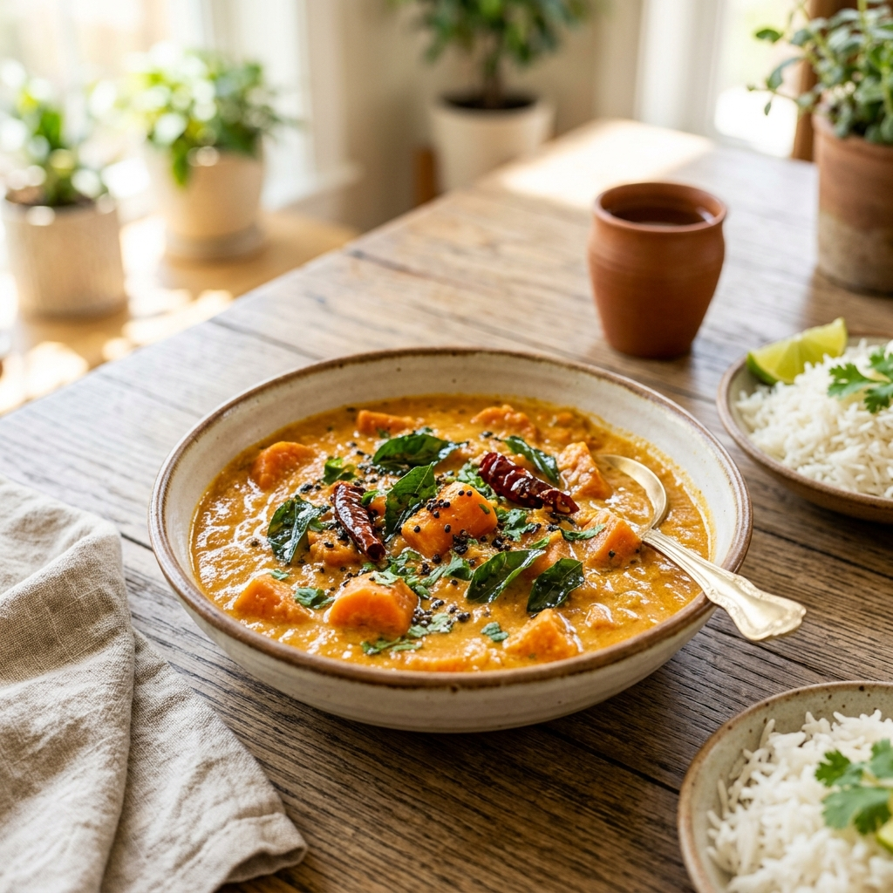

Curries
Carrot Coconut Curry
A delicious carrot coconut curry.
Prep Time
10 mins
Cook Time
15 mins
Total Time
25 mins
Instructions
- Heat the oil in a pan over medium heat.
- Add the mustard seeds and let them splutter. Then add the cumin seeds, chana dal, urad dal, and dried red chilies. Sauté until the dals turn light golden.
- Add the chopped onions and cook until soft and translucent.
- Add the curry leaves and green chilies. Sauté for about 2 minutes.
- Stir in the chopped or grated carrots, turmeric powder, and salt. Mix well.
- Cover and cook on low to medium heat for about 10 minutes, stirring occasionally, until the carrots are soft.
- Optional: Dry grind the cumin seeds, cloves, dried red chilies, and grated coconut into a coarse mixture (add a little water only if needed). Mix it into the cooked carrots and cook for another 2–3 minutes for extra flavor.
- Serve hot with steamed rice, chapati, or as a side dish.